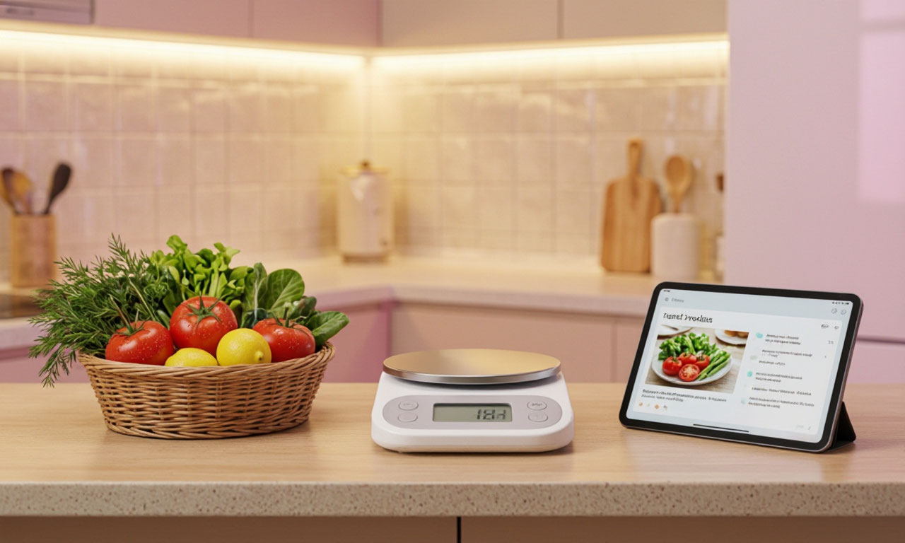

Твои инструменты для кухни
Бесплатные калькуляторы, конвертеры и планировщики для идеальных блюд.

🩺 Готовишь полезно? Проверь влияние на здоровье!
Используй наш калькулятор БЖУ и ИМТ из проекта «ЗдоровьеНавигатор», чтобы контролировать питание.
Открыть ЗдоровьеНавигатор →Как выбрать мультиварку: гид по функциям
Не переплатите за ненужные программы. Разбор мощности, чаш и безопасности + ссылка на технику.